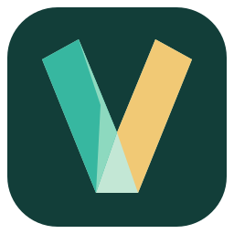
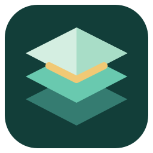
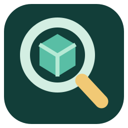
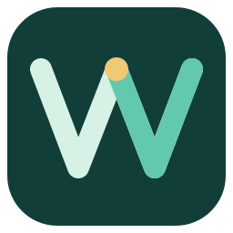
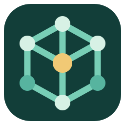
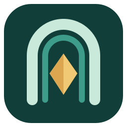
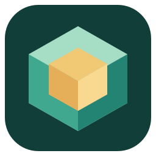
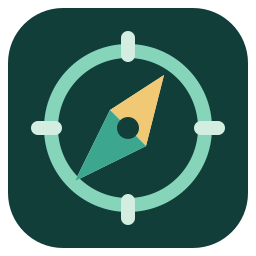

01 Facet
A crystalline V. Distinctive, compact, and closest to the VibeMiner name.
16 · 24 · 32 · 48 px
Open SVG ↗Excavate is the selected application icon. The original nine directions remain here for comparison.

A crystalline V. Distinctive, compact, and closest to the VibeMiner name.

A bold mining tool cutting into a small bank of data blocks.

Layered archives with a bright exposed seam: builds over shared content.

A search lens around a raw data facet, with a strong exploration silhouette.

An abstract V and M form a continuous signal through the data.

A connected content cube: shared objects, relationships, and discovery.

An opening into an unexplored build, with a mineral at its center.

A precise voxel with an illuminated inner core: inspect what is inside.

A survey compass for navigating unknown datasets and exact builds.